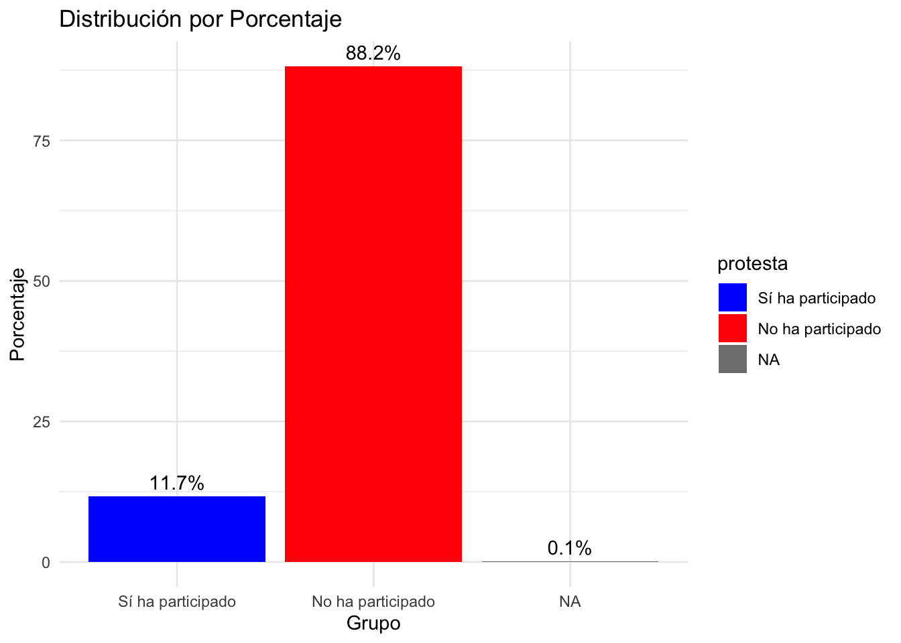

Semana 2 - Sesión Teórica
Estadística Descriptiva
La estadística descriptiva es un conjunto de técnicas numéricas y gráficas para describir y analizar un grupo de datos. Utilizamos las medidas de tendencia central y de dispersión para informar sobre cómo se comportan los datos. Se pueden describir bases de datos extraídas a partir de una encuesta o en un registro.
Preguntas claves para describir
Si los individuos son los objetos descritos por un conjunto de datos. Los individuos pueden ser personas, pero también pueden ser animales o cosas.(Filas) Y una variable es cualquier característica de un individuo. Una variable puede tomar distintos valores para distintos individuos.(Columnas)
¿Quién? ¿Qué individuos describen los datos? ¿Cuántos individuos aparecen en los datos?
¿Qué? ¿Cuántas variables contienen los datos? ¿Cuáles son las definiciones exactas de dichas variables? ¿En qué unidades se ha registrado cada variable? El peso, por ejemplo, se puede expresar en kilogramos, en quintales o en toneladas.
¿Por qué? ¿Qué propósito se persigue con estos datos? ¿Queremos responder alguna pregunta concreta? ¿Queremos obtener conclusiones so- bre unos individuos de los que no tenemos realmente datos?
Medidas de tendencia central
A las medidas de centralidad también se les conoce también como medidas de tendencia central
Las medidas de tendencia central (moda, mediana y media) muestran la medición más típica o representativa de una determinada distribución (Agresti y Finlay 1997)
Un estadístico de tendencia central proporciona una estimación de la puntuación típica, común o normal encontrada en una distribución de puntuaciones en bruto (Ritchey 2008)
Por lo general, la descripción de la distribución de una variables incluye una medida de su centro o tendencia central (Nota: Aunque pueda sonar extraño, esto también aplica para las variables categóricas nominales y ordinales)
Las medidas más comunes de esta tendencia central son:
- Moda
- Mediana
- Media o Promedio
Utilizaremos la base de datos de LAPOP para extraer las medidas de tendencia central
https://www.vanderbilt.edu/lapop/peru/ABPer2023-Peru-Questionnaire-V9.2.3.0-Spa-230309-W.pdf
Emplearemos las siguientes dos preguntas :

Preparando las variables a utilizar de la base de datos de LAPOP 2023
library(rio)
data=import("PER_2023_LAPOP.sav")library(rio)
data=import("PER_2023_LAPOP.sav")- Usamos el comando as.numeric para solicitar dar el formato de variable numérica.
data$manifestaciones_ley=as.numeric(data$e5)
data$manifestaciones_ley=as.numeric(data$manifestaciones_ley)data$manifestaciones_ley=as.numeric(data$e5)
data$manifestaciones_ley=as.numeric(data$manifestaciones_ley)- Usamos el comando as.factor para solicitar dar el formato de variable factor o categorica.
data$protesta=(data$prot3)
data$protesta=as.factor(data$protesta)Si la variable es categórica, se requiere definir sus valores.
data$protesta=factor(data$protesta,levels = levels(data$protesta),
labels = c("Sí ha participado","No ha participado"),
ordered = F)data$protesta=(data$prot3)
data$protesta=as.factor(data$protesta)
data$protesta=factor(data$protesta,levels = levels(data$protesta),
labels = c("Sí ha participado","No ha participado"),
ordered = F)Moda
- La Moda es el valor que ocurre con mayor frecuencia
- Es particularmente útil con variables categóricas nominales y categóricas ordinales
- A esta mayor frecuencia de un determinado valor corresponde el significado de centralidad en variables categóricas
Moda en R Studio
Usamos el comando table para solicitar una tabla de frencuencias e identificar el valor más alto.
table(data$protesta)table(data$protesta)##
## Sí ha participado No ha participado
## 180 1354table(data$protesta) #No tiene sentido generar una tabla de variables numéricas.table(data$protesta)##
## Sí ha participado No ha participado
## 180 1354Moda en R Studio (2)
- Otra forma con el paquete dplyr
install.packages("dplyr")
library(dplyr)library(dplyr)- Usamos el pipe %>% para ordenar los comandos.
data %>% ## Paso 1: DATA
count(protesta=protesta, name = "Frecuencia") ## Paso 2: Pido una tabla de frecuencia de la variable continentdata %>% ## Paso 1: DATA
count(protesta=protesta, name = "Frecuencia") ## Paso 2: Pido una tabla de frecuencia de la variable continent## protesta Frecuencia
## 1 Sí ha participado 180
## 2 No ha participado 1354
## 3 <NA> 1Moda en R Studio (3)
- Otra forma con el paquete mutate para crear una nueva variable.
data %>%
count(protesta=protesta, name = "Frecuencia") %>% mutate(Porcentaje=Frecuencia/sum(Frecuencia)*100) data %>% ## Paso 1: DATA
count(protesta=protesta, name = "Frecuencia") %>% ## Paso 2: Pido una tabla de frecuencia de la variable continent
mutate(Porcentaje=Frecuencia/sum(Frecuencia)*100) ## Paso 3: Creo una columna de %. Hasta aquí ya tienen una tabla simple. ## protesta Frecuencia Porcentaje
## 1 Sí ha participado 180 11.72638436
## 2 No ha participado 1354 88.20846906
## 3 <NA> 1 0.06514658Mediana
La Mediana es el punto medio de una distribución, es decir el valor que divide a la distribución en dos partes iguales.
Por lo tanto, debajo de ese valor se ubica el 50% de los casos y por encima de ese valor se ubica el otro 50% de los casos El cálculo de la Mediana es posible o tiene sentido cuando la variable que se está analizando es por lo menos ordinal.
Cálculo de la Mediana
Para hallar la Mediana de una distribución se necesita:
Ordenar todas las observaciones de la mínima a la máxima (lista ordenada)
Si el número de observaciones es impar, entonces la mediana es la observación central de la lista ordenada.
Para hallar la observación central (por lo tanto, el valor de la mediana), se usa la siguiente fórmula: (n + 1) / 2
Si el número de observaciones es par, la mediana es el promedio (o la media) de las dos observaciones centrales de la lista ordenada.
Cálculo de la Mediana cuando el número es impar
Tengo 11 números.

Cálculo de la Mediana cuando el número es par
Tengo 20 números.

Mediana en R Studio
Usamos el comando median para solicitar la mediana.
median(data$manifestaciones_ley,na.rm=T)median(data$manifestaciones_ley,na.rm=T)## [1] 6Otra forma con el paquete dplyr
install.packages("dplyr")
library(dplyr)library(dplyr)- Usamos el comando summarize para resumir la información.
data %>% ## Paso 1: DATA
summarize(Mediana=median(manifestaciones_ley,na.rm=T)) ## Paso 2: Resumir data %>% ## Paso 1: DATA
summarize(Mediana=median(manifestaciones_ley,na.rm=T)) ## Paso 2: Resumir ## Mediana
## 1 6Media
La media o el promedio es la suma de todas las mediciones (valores) divididas por el número total de mediciones u observaciones
- Fórmula para el cálculo de la Media (Promedio):

Media en R Studio
Usamos el comando media para solicitar la media
mean(data$manifestaciones_ley,na.rm=T)mean(data$manifestaciones_ley,na.rm=T)## [1] 6.158585Otra forma con el paquete dplyr
install.packages("dplyr")
library(dplyr)library(dplyr)- Usamos el comando summarize para resumir la información.
data %>% ## Paso 1: DATA
summarize(Promedio=mean(manifestaciones_ley,na.rm=T)) ## Paso 2: Resumir data %>% ## Paso 1: DATA
summarize(Promedio=mean(manifestaciones_ley,na.rm=T)) ## Paso 2: Resumir ## Promedio
## 1 6.158585Media vs. mediana
La media es un estadístico sensible a los valores extremos.Basta que algún dato dentro de la muestra sea muy alto o muy bajo, el promedio se verá alterado.
La mediana, en cambio, es un estadístico robusto. Aunque los extremos de los datos se vean alterados, la mediana permanece invariable.
Media vs. mediana en R studio
Usamos los paquetes dplyr y tidyverse
Usamos el pipe %>% para ordenar los comandos.
install.packages("dplyr")
library(dplyr)library(dplyr)- Usamos el comando summarize para resumir la información.
data %>% ## Paso 1: DATA
summarize(Promedio=mean(manifestaciones_ley,na.rm=T),Mediana=median(manifestaciones_ley,na.rm=T)) ## Paso 2: Resumir data %>% ## Paso 1: DATA
summarize(Promedio=mean(manifestaciones_ley,na.rm=T),Mediana=median(manifestaciones_ley,na.rm=T)) ## Paso 2: Resumir ## Promedio Mediana
## 1 6.158585 6Media vs. mediana en R studio en una tabla
Usamos el paquete kableExtra
Usamos los comandos kable y kable_styling para elaborar una tabla.
library(kableExtra)data %>% ## Paso 1: DATA
summarize(Promedio=mean(manifestaciones_ley,na.rm=T),Mediana=median(manifestaciones_ley,na.rm=T)) %>% ## Paso 2: Resumir
kable() %>% # Paso 3: Convierte la tabla en código HTML
kable_styling()# Paso 4: Se visualiza mejor la tabla.Esto te servirá cuando utilices Rmd dado que este crear un archivo HTML.library(kableExtra)data %>% ## Paso 1: DATA
summarize(Promedio=mean(manifestaciones_ley,na.rm=T),Mediana=median(manifestaciones_ley,na.rm=T)) %>% ## Paso 2: Resumir
kable() %>% # Paso 3: Convierte la tabla en código HTML
kable_styling()# Paso 4: Se visualiza mejor la tabla.Esto te servirá cuando utilices Rmd dado que este crear un archivo HTML.## Warning in kable_styling(.): Please specify format in kable. kableExtra can customize
## either HTML or LaTeX outputs. See https://haozhu233.github.io/kableExtra/ for details.| Promedio | Mediana |
|---|---|
| 6.158584 | 6 |
Media vs. mediana en R studio por grupos
- Usamos el comando group_by para referir los grupos en los que deseamos resumir la información.
data %>% ## Paso 1: DATA
group_by(protesta) %>%
summarize(Promedio=mean(manifestaciones_ley,na.rm=T),Mediana=median(manifestaciones_ley,na.rm=T))data %>% ## Paso 1: DATA
group_by(protesta) %>%
summarize(Promedio=mean(manifestaciones_ley,na.rm=T),Mediana=median(manifestaciones_ley,na.rm=T))## # A tibble: 3 × 3
## protesta Promedio Mediana
## <fct> <dbl> <dbl>
## 1 Sí ha participado 7.42 8
## 2 No ha participado 5.99 6
## 3 <NA> 9 9Gráfico : Histograma
Para variables numéricas
- Instalar el paquete ggplot2
install.packages("ggplot2")
library(ggplot2)library(ggplot2)- El comando aes denomina a las coordenadas ‘x’ y ‘y’.
ggplot(data, aes(x=manifestaciones_ley))- El comando geom_histogram genera el histograma.
ggplot(data, aes(x=manifestaciones_ley)) + geom_histogram()ggplot(data, aes(x=manifestaciones_ley)) + geom_histogram()## `stat_bin()` using `bins = 30`. Pick better value with `binwidth`.## Warning: Removed 9 rows containing non-finite outside the scale range (`stat_bin()`).Gráfico : Histograma por grupos
- El comando geom_histogram genera el histograma. Se emplea fill para colocar la variable factor.
ggplot(data, aes(x = manifestaciones_ley, fill = protesta)) +
geom_histogram(alpha = 0.6, position = "dodge", bins = 20) +
labs(title = "Histograma por Grupo", x = "Valor", y = "Frecuencia") +
theme_minimal() +
scale_fill_manual(values = c("blue", "red"))ggplot(data, aes(x = manifestaciones_ley, fill = protesta)) +
geom_histogram(alpha = 0.6, position = "dodge", bins = 20) +
labs(title = "Histograma por Grupo", x = "Valor", y = "Frecuencia") +
theme_minimal() +
scale_fill_manual(values = c("blue", "red"))## Warning: Removed 9 rows containing non-finite outside the scale range (`stat_bin()`).Gráfico : Gráfico de Barras
Para variables categóricas
- Instalar el paquete ggplot2
install.packages("ggplot2")
library(ggplot2)library(ggplot2)- El comando aes denomina a las coordenadas ‘x’ y ‘y’.
ggplot(data, aes(x=protesta))- El comando geom_bar genera el gráfico de barras.
ggplot(data = data, aes(x = protesta)) +
geom_bar(fill = 'red')ggplot(data = data, aes(x = protesta)) +
geom_bar(fill = 'red')Gráfico de barras con porcentaje
- El comando geom_bar genera el gráfico de barras.
tabla <- data%>%
count(protesta)%>%
mutate(Porcentaje=round(n/sum(n)*100,1))
# Crear gráfico de barras con ggplot2
ggplot(tabla, aes(x = protesta, y = Porcentaje, fill = protesta)) +
geom_bar(stat = "identity") +
labs(title = "Distribución por Porcentaje", x = "Grupo", y = "Porcentaje") +
theme_minimal() +
scale_fill_manual(values = c("blue", "red", "green")) +
geom_text(aes(label = sprintf("%.1f%%", Porcentaje)), vjust = -0.5)tabla <- data%>%
count(protesta)%>%
mutate(Porcentaje=round(n/sum(n)*100,1))
# Crear gráfico de barras con ggplot2
ggplot(tabla, aes(x = protesta, y = Porcentaje, fill = protesta)) +
geom_bar(stat = "identity") +
labs(title = "Distribución por Porcentaje", x = "Grupo", y = "Porcentaje") +
theme_minimal() +
scale_fill_manual(values = c("blue", "red", "green")) +
geom_text(aes(label = sprintf("%.1f%%", Porcentaje)), vjust = -0.5)
Gráfico sin NA
- El comando !is.na significa no contar con datos perdidos.
tabla_sin_na <- subset(tabla, !is.na(protesta))
ggplot(tabla_sin_na, aes(x = protesta, y = Porcentaje, fill = protesta)) +
geom_bar(stat = "identity") +
labs(title = "Distribución por Porcentaje", x = "Grupo", y = "Porcentaje") +
theme_minimal() +
scale_fill_manual(values = c("blue", "red")) +
geom_text(aes(label = sprintf("%.1f%%", Porcentaje)), vjust = -0.5)tabla_sin_na <- subset(tabla, !is.na(protesta))
ggplot(tabla_sin_na, aes(x = protesta, y = Porcentaje, fill = protesta)) +
geom_bar(stat = "identity") +
labs(title = "Distribución por Porcentaje", x = "Grupo", y = "Porcentaje") +
theme_minimal() +
scale_fill_manual(values = c("blue", "red")) +
geom_text(aes(label = sprintf("%.1f%%", Porcentaje)), vjust = -0.5)Más información en: https://www.sharpsightlabs.com/blog/barplot-r-geom_bar/
Gráfico Circulas o Pie
ggplot(tabla_sin_na, aes(x = "", y = Porcentaje, fill = protesta)) +
geom_bar(stat = "identity", width = 1) +
coord_polar(theta = "y") + # Convierte a gráfico circular
theme_void() + # Elimina fondo y ejes
labs(title = "Gráfico de Pastel en R") +
scale_fill_manual(values = c("blue", "red")) ggplot(tabla_sin_na, aes(x = "", y = Porcentaje, fill = protesta)) +
geom_bar(stat = "identity", width = 1) +
coord_polar(theta = "y") + # Convierte a gráfico circular
theme_void() + # Elimina fondo y ejes
labs(title = "Gráfico de Pastel en R") +
scale_fill_manual(values = c("blue", "red")) 
Resumen de estadísticos de tendencia central

Resumen de estadísticos de tendencia central

Reto - Nivel 2
Debido a que ya se han convocado las Elecciones Generales 2026 en el Perú, es fundamental analizar la cultura política de los ciudadanos en relación con los comicios. Para ello, se utilizará la base de datos de la Encuesta LAPOP 2023, la cual proporciona información clave sobre las percepciones y actitudes sobre las elecciones. Realice con los resultados un informe descriptivo. Utilice los gráficos aprendidos.